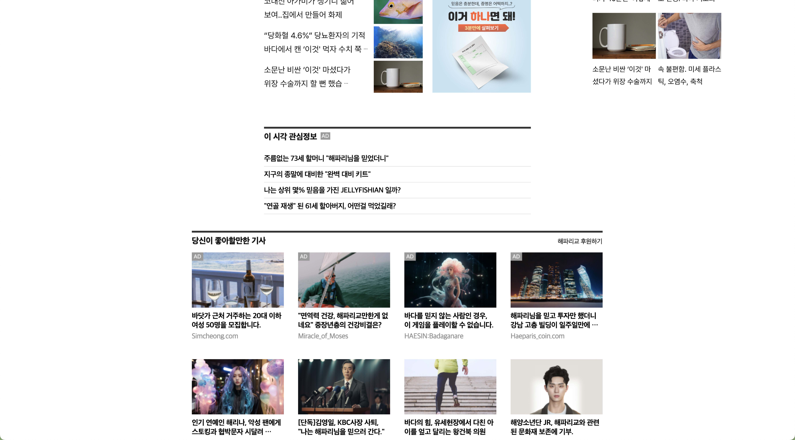
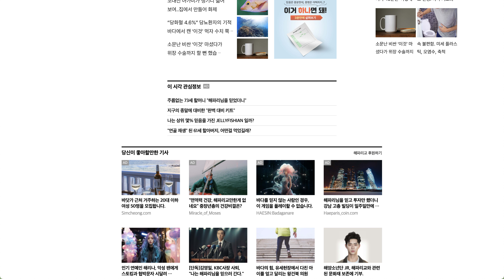

해파리교(Church of Jellyfish)
Graphic
Interaction
2023 | 개인 작업 | HTML / SCSS
2023 | 개인 작업 | HTML / SCSS

신과 관련된 이야기를 좋아한다. 그 시대와 장소에 살던 사람들의
생각을 엿볼 수 있는데, 그렇다면 오늘날의 신은 무엇일까? 라는
생각에서 프로젝트를 시작하였다.
작업자는 신은 인터넷이라고 생각했다. 인터넷은 누구나 쉽게 접할
수 있으며, 누구나 인터넷 속 말을 통해 현혹된다. 각종 광고는
자본주의를 살 찌우게하며, 각종 소문은 한 사람을 죽이기도 한다.
또한 알고리즘은 나의 생각을 억제하고 판단을 흐리게 만들기도
한다. 인터넷은 우리를 혼란에 빠트리며, 우리의 생각을
지배하려든다.

해파리는 몸체가 연약하고 뇌가 장기가 거의 없으며 배설과 흡입 모두 한 구멍을 통해 이뤄진다. 또한 헤엄치는게 아니라 물이 흐르는대로 몸을 맡기고 흘러간다. 이렇게 연약한 해파리를 인터넷 정보와 광고 등을 활용하여 종교의 신으로 자리 매김하게끔 하도록 프로젝트를 기획하였다. 해파리교 사이트에는 현재 우리가 인터넷을 이용하며 자주 마주친 여러 광고들을 패러디하여 보는 이가 공감을 느끼고 생각해본 적 없던 인터넷 활용의 기이함을 느끼도록 하였다.
종교는 이야기가 중요하다. 말씀으로부터 세상이 창조되었고, 벽화로 우리에게 전해졌다. 고로 인터넷 또한 정보의 집합체로 수많은 글자와 그림을 통해 전파된다. 이처럼 인터넷에선 가장 쉽게 이야기가 유통되고 손쉽게 정보를 얻을 수 있는 사이트를 고민하다 XX위키, XX피디아를 떠올리고 이를 패러디한 피쉬피디아(Fishpidia)를 제작하였다. 보는 이가 정보를 탐독하며 해파리교의 타당성을 느끼도록 만들기 위해 실제 정보를 혼재하여 작성하였다.
또한 인간의 시각정보에 의지를 많이 하므로 이미지를 통한 정보전달도 중요하다. 합성된 가상의 이미지를 유포해 이용자가 사실여부를 판가름하기 힘들도록 만드는 거짓정보들처럼 AI(미드저니)를 이용해 종교와 관련된 가상의 이미지들을 제작하였다.
믿음직한 정보가 유통된다고 착각할 수 있는 각종 언론 사이트는 사실 가장 많은 광고를 담고 있기도 하다. 뉴스 사이트에서 볼 수 있는 여러 광고를 패러디하고 실제 있을 법한 기사를 패러디하여 보는 이에게 종교 관련된 기사들만 노출시킨다. 언론 사이트에 올라온 기사는 믿음을 주는 점을 이용하여 종교가 진짜 존재할지도 모른다는 믿음을 보는 이가 느끼길 바라며 사이트를 제작하였다.
위의 영상은 패러디한 사이트들과 제작된 페이크 사이트의 비교 영상이다.


 
